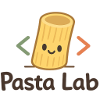

My research focuses on large language models and agentic AI for software engineering. I lead the Code Intelligence (COIN) Lab at UCLA Pasta Lab 
I received my Ph.D. from Columbia University this video for my doctoral research). Previously, I also had lots of fun training code LLMs and developing coding agents at Google DeepMind AWS Agentic AI T. J. Watson Lab
Prospective Students: I am always looking for brilliant students to join my lab. If you are interested in working with me, drop me an email with (1) your CV and (2) a brief introduction of your research interests and background.
News
Aug 2026
We released "The Next Agentic Cybersecurity Challenge" to evaluate frontier models on binary analysis and reverse engineering. Check our benchmark on Vals AI!
Jul 2026
I joined the Department of Computer Science at UCLA as an Assistant Professor.
Apr 2026
OpenSage , our ADK that empowers coding agents to self-evolve and self-improve, was accepted to ICML 2026 . Our agent, SageAgent, achieved the top-1 resolved rates in CyberGym and Terminal-Bench (in Feb 2026)!
Sep 2025
I joined AWS Agentic AI to develop the spec-driven coding agent, Kiro
The Next Challenge for Agentic Cybersecurity: A Realistic, Contamination-Free Reverse Engineering Benchmark
Yangruibo Ding , Zhuo Zhang
Preprint
SWE-Spot: Building Small Repo-Experts with Repository-Centric Learning
Yangruibo Ding
Preprint
OpenSage: Self-programming Agent Generation Engine
Yangruibo Ding , Yueqi Chen, Wenbo Guo, Dawn Song
ICML 2026 SageAgent ranked 1st (Feb 2026) in CyberGym and Terminal-Bench
Position: To Defend Against Cyber Attacks, We Must Teach AI Agents to Hack
Yangruibo Ding , Wenbo Guo, Ruijie Meng
ICML 2026
DevOps-Gym: Benchmarking AI Agents in Software DevOps Cycle
Yangruibo Ding , Zhenkai Liang, Wenbo Guo
ICLR 2026
Co-PatcheR: Collaborative Software Patching with Component(s)-specific Small Reasoning Models
Yangruibo Ding , Wenbo Guo
NeurIPS 2025
Vulnerability Detection with Code Language Models: How Far Are We?
Yangruibo Ding , Yanjun Fu, Omniyyah Ibrahim, Chawin Sitawarin, Xinyun Chen, Basel Alomair,
ICSE 2025 Adopted by Gemini-1.5 and Qwen3-Coder-Next
SemCoder: Training Code Language Models with Comprehensive Semantics Reasoning
Yangruibo Ding ,
Jinjun Peng, Marcus J. Min, Gail Kaiser, Junfeng Yang, Baishakhi Ray
NeurIPS 2024
TRACED: Execution-aware Pre-training for Source Code
Yangruibo Ding ,
Ben Steenhoek, Kexin Pei, Gail Kaiser, Wei Le, Baishakhi Ray
ICSE 2024
CrossCodeEval: A Diverse and Multilingual Benchmark for Cross-File Code Completion
Yangruibo Ding* ,
Zijian Wang*, Wasi Uddin Ahmad*, Hantian Ding, Ming Tan, Nihal Jain, Murali Krishna Ramanathan, Ramesh Nallapati, Parminder Bhatia, Dan Roth, Bing Xiang (* equal contribution)
NeurIPS 2023 (Datasets & Benchmarks) Adopted by DeepSeek-Coder, Qwen2.5-Coder, StarCoder, and Augment Code
Honors and Awards
IBM Ph.D. Fellowship Award. 2022-2024
ACM SIGSOFT Distinguished Paper Award. 2023
IEEE TSE Best Paper Award Runner-up. 2022
Ph.D. Service Award, Columbia CS. 2025
NSF Travel Award. 2022, 2023
ACM SIGSOFT CAPS Travel Grant. 2023
Academic Services
Chair / Co-Chair
Program Committee
Conference Reviewer
Journal Reviewer
Invited Talks
Dec. 2025: "Towards Autonomous Software Engineering: From Language Models to Agentic Systems" @ Cornell, UT Austin.
Feb. - Apr. 2025: "From Code Generation Towards Software Engineering: Advancing Code Intelligence w/ Language Models" @ UW, UMD, CMU, UCLA, UTD, JHU, Georgia Tech, Stony Brook, Dartmouth, NUS.
Oct. 2024: "Training Code Language Models with Comprehensive Semantics Reasoning" @ UIUC.
Oct. 2024: "Semantic-aware Source Code Modeling" @ UMD, NCSU, ASE'24.
Aug. 2024: "Training Code Language Models with Comprehensive Semantics Reasoning" @ Google DeepMind.
Apr. 2024: "Vulnerability Detection with Code Language Models: How Far Are We?" @ Columbia SSS Seminar.
Industry Experiences
Sep 2025 - June 2026: Postdoctoral Research Scientist @ AWS Agentic AI - Kiro Science.
May 2024 - Dec 2024: Student Researcher @ Google DeepMind - Learning4Code.
May 2022 - Sep 2022: Applied Scientist Intern @ AWS AI Labs - Code Whisperer/Amazon Q.
May 2021 - Sep 2021 & June 2020 - Aug 2020: Research Intern @ IBM T. J. Watson Lab - AI for Code.
Last Updated: Aug 2026 .
Photo by Lingyi. Website Template by Jon Barron